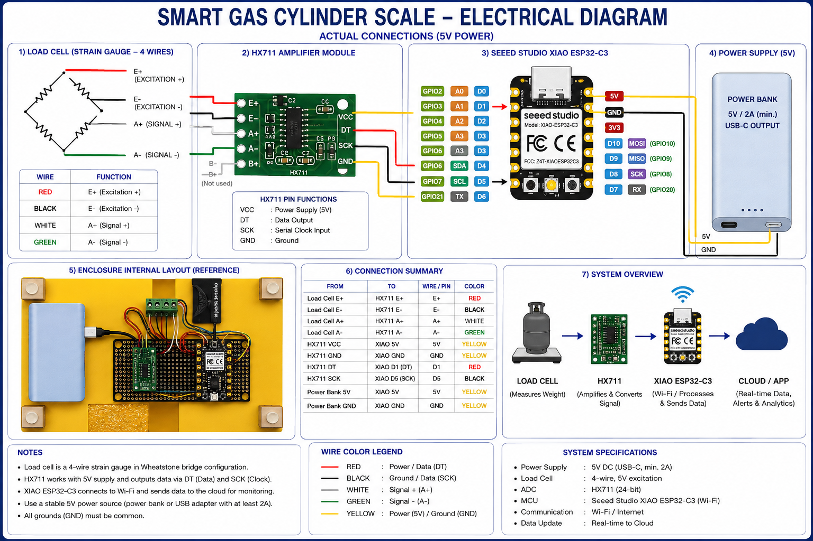

Final Project
My flow rate sensor got delayed from Friday to Saturday, and due to how the mailing system works, they could only hand it to my hand on Monday at 1:30 p.m. This means I would have less than one day to bring my project together. So I gave up on the smart valve adapter, which would measure the flow rate of the gas to calculate how much gas was still left in the gas cylinder, and went to work on a scale that would calculate how much gas there is still left in the cylinder by measuring the current mass left of the gas into the original mass. Building it was a little complex because when I was making the design, I had so many measurements that I needed to consider, and how the sensor would be placed, the base of the actual scale balanced, where the wires would go, and so on. When I 3D printed the model, it turned out that there were still a bunch of major space flaws. I solved those problems (ex: there was no space for the battery) by brute force. I hand drilled a bunch of holes to make new space. After that, I only needed to solder my PCB. This part was a little bit stressful because I kept placing the base of my ESP32 one unit in the wrong direction, which made me resolder the same thing a few times. Then when I went to test my sensor, the sensor was not working. It turned out that I put one wire in the wrong place. Now I officially finished 100% of my hardware, already got my sensor to work, and calibrated it. I only need to finish the app in which the data will be displayed and be able to connect the ESP32 to the internet.
This project was based on the idea of what it can become. The United States is the richest country on Earth and also one of the countries with the greatest infrastructure on Earth. Here, there are tubes underground that provide infinite gas for all the houses. But all the underdeveloped or developing countries rely on the LPG gas cylinder. These countries don't have a system to directly provide gas for them, so they need a remote way to have access to gas, which is an LPG gas cylinder. This system is used by more than half of the population worldwide. Now imagine you are cooking for your family on a Friday night and suddenly the fire dies, and you try to turn it back on and nothing happens. Imagine you are in the peak of the winter and then suddenly you are not capable of turning your heater back on. This happens to more than half of the world population. Currently, the only way to know if your gas tank is empty is when it completely runs out. When it runs out, the customers call their gas company to replace their LPG cylinder, but the problem with that is that it takes hours to days to replace it. These are days that they don't have access to gas at all. Days of inconvenience in which this inconvenience is when customers go from one company to another. So, I created a product that is able to know exactly how much gas there is inside the LPG cylinder at all times. It measures the weight of the liquid propane inside the LPG cylinder, compares it with the weight of the full LPG cylinder, and it already is calibrated to not measure the weight of the empty LPG cylinder. With those measurements, it calculates the percentage of liquid propane inside the LPG cylinder. I measured the weight by using a 5kg Load Cell. The data connected by the load cell is transferred into the Xiao ESP32-C3 microcontroller which then process the information with the code that was uplouded into it. The code uses an HX711 to read the load cell in grams, it calculates the percentage of LPG remaining as described above, and then it hosts a webpage that displays the result. Inside the code, there is also hardware information, such as the weight of the base to calibrate it, "-442.84 grams". A significant portion of the code was used to create the website features. When it is turned on: 1) Lets the load cell settle, tare the base. 2) Tare the base. 3) Tries to connect with the Wifi. 4) Connects with the WiFi. 5) Lunches the website in the IP address: http://192.168.86.44 6) Sends the message: "Original LPG simulation ready"

